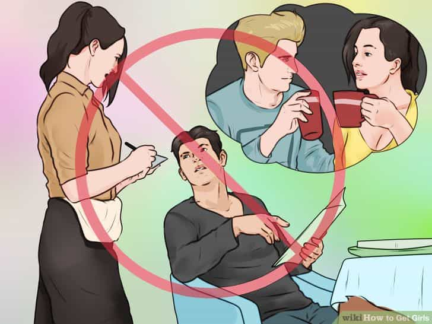

“I’m here,” she texted me. I’d been flirting over text with a bright-green-haired, black-lipstick-sporting, self-proclaimed feminist that I met off of Tinder. “Be there in a second,” I texted her back.
I let her in the front door, and immediately gave her a hug. I grabbed her by the hand and led her upstairs to my room. As we walked up the stairs, she spat out the oldest shit test in the world: “You’re a player, aren’t you?”
Most guys would’ve panicked, but I simply amplified the frame, which is one of the best methods to pass a shit test, and told her: “Yeah, you’re the 12th girl today.” As expected, her eyes grew wide, she tried to contain a laugh, and told me to “shut up!” with a giant smile on her face.
We walked into my room and I slyly shut the door behind us, while grabbing a bottle of vodka in seconds flat. Rather than trying to impress her or get her comfortable with me first, I simply plopped down onto the faux bearskin blanket on my bed, and invited her to sit right next to me. She did.
After about 5 minutes of solid verbal game and sub-communication, she was attacking my face like a grizzly bear in heat. Another five minutes later, and she was screaming: “Fuck me, Daddy! Harder! Please, sir!”
To most guys, getting a regular girl, let alone a feminist, to have sex with them would seem like an impossible task. Interestingly enough, it’s actually a lot easier (and more common) than you’d think.
A Primer To Women’s Psychology

Anyone with even a modicum of game knows that women (and people overall) have two “minds,” so to speak: their conscious mind, and their subconscious mind. You can also liken these two components to the neo-frontal cortex (the human brain) and the limbic brain (the animalistic brain). These two brains can help us understand why people frequently say one thing, but mean another.
The neo-frontal cortex is essentially what deals with logic, reasoning, and in this case, social conditioning. This is the part of a woman’s brain that is responsible for her general hatred of “fuck boys,” and other super modern feminist beliefs. Then, however, there’s her limbic brain. This is responsible for her attraction to characteristics such as decisiveness, assertiveness, and confidence. It’s also responsible for her being attracted to “fuck boys” (a sign of pre-selection).
Whenever you have a question about women, you can generally get it answered by referring to these two minds, which often create conflict with one another. For example, have you ever had a girl totally into you, then at the last second she doesn’t want to have sex? This is a very popular phenomena, and it’s also known as last minute resistance in the pickup community.
Essentially what’s going on here, is that you’ve made her “limbic brain,” attracted to you by exhibiting alpha male characteristics, but you haven’t appeased her social conditioning, or her neo-frontal cortex. Even though she wants to sleep with you, she can’t do it, because she’s afraid of being labeled as a slut. Now obviously keep in mind that she may genuinely just not want to have sex with you, but there’s plenty of girls who really want to be sexual, yet are too afraid of society’s judgments. I’ll talk more about this later, but keep this “two brain” model in mind.
What Women Are Fundamentally Attracted To
When you ask most guys what women want, they typically say something like:
- “A guy who’s tall!”
- “A guy who’s rich!”
- “A guy who’s handsome!”
And while these things will certainly not hurt you, women actually care very little about looks. Yup, that’s right—women really don’t care that much about looks. Why?
Well, entire books could be written about this, but it’s essentially because women evolved to be attracted to men that could keep them alive in the primitive, pre-civilization world. And because our bodies still think we’re in this world, we’re still attracted to things that would’ve helped us survive then.
“So then wouldn’t women be attracted to jacked guys?” I can hear you ask. Yes, definitely—being muscular helps you with the ladies, but it isn’t as important as your personality. Masculinity is more than physical… it also has a spiritual component responsible for your drive to achieve great things, and your will to succeed, which are FAR more important to women than how you look.
To put it bluntly, women are primarily attracted to personality characteristics such as decisiveness, assertiveness, and confidence. Back then, if a woman didn’t have a man who was decisive, assertive, and confident to protect her, she’d get killed by a lion or gang raped by a rival tribe or something. Yes, women obviously respond favorably to good looks, wealth, and social status, but in general these things matter much less than your personality characteristics (aka your game).
So, as you can see, we are the product of literally millions of years of evolution. Now do you think that just because some girl picks up a copy of “The Bell Jar,” and takes a class on Karl Marx that she’s going to completely undo millions of years of evolution? Of course not. And this brings me to my point: feminists are literally just like every other woman. They’re still sexually attracted to all the same things… their social conditioning is simply different.
A Feminist’s Neo-Frontal Cortex
![905e7f8d-1e15-4087-9c0b-028ccad64646_800[1]](wp-content/uploads/2016/08/905e7f8d-1e15-4087-9c0b-028ccad64646_8001.jpg)
What does an emotionally healthy woman’s neo-frontal cortex tell her? Well, she was probably raised in a traditional household, as these are the only places that produce emotionally functional women nowadays, so what does that tell us?
It tells us that her “social conditioning,” or her human brain, believes that she’s “attracted to gentlemen, who are manly, but gentle,” or something like that. Is this 100% accurate? Probably not; she likely still feels some tingles for bad boys, but in general, women who are emotionally functional can appreciate it when a man is masculine and takes the lead.
If you’re a modern college campus feminist, however, what would your social conditioning look like? An SJW’s neo-frontal cortex flutters about with thoughts such as these, a million miles a second:
- “Men are all pigs!”
- “I hate men!”
- “Men are all misogynistic rapists!”
BUT, and here’s the key to remember, her limbic brain is still turned on by the same things as every other girl. Feminists can complain and whine all they like, but they cannot deny their nature. This is why she wanted a man who is confident, strong, and assertive.
Step-By-Step Breakdown

Okay, so now that I’ve laid out the groundwork here, let’s break down what I did step by step. First things first, if you recall, what did I do the second she came in the door? I gave her a hug. This is key, men, so listen up. The sooner that you initiate physical contact with a woman, the better. Why? Because this conveys the fact that you’re a confident, assertive man who isn’t afraid of being sexual around women. Now don’t be a retard and act sexual around every single girl you meet, but if a girl comes over to your house alone after you get her number on Tinder, she’s probably expecting you to be a little bit sexual to say the least.
Then what did I do? I grabbed her hand led her upstairs. I didn’t ask like a faggot: “C-can I h-hold your hand?” I just fucking took it. Now, if she tensed up or became visibly uncomfortable I WOULD HAVE LET GO, but in general, you want to assume attraction instead of ask for it.
Then, again, if you recall, she gave me the grand-daddy of all shit tests: “Are you a player?”
Well, yeah, I am. But that’s kind of a lame answer and it doesn’t pass her shit test. “What’s a shit test, Jon?” I can hear the newbie to game ask, and I’ll tell you. A shit test is basically when a woman wants to see what you’re made of. She’s testing you to see if you’re congruent. So what do you think she’s testing when she asks a question like this? To see if I’m going to be a bitch and get embarrassed over my sexuality.
How would most guys respond to a question like this? “UHHHH-NO! I’m not a player, really! I’ve only had sex with three girls before!” This is probably the worst way to pass this shit test, because it shows that you’re insecure about your sexuality. So what’s the best way to pass this shit test? To simply amplify the frame. This accomplishes three things:
- It shows that you’re not afraid of admitting that you’re a sexual man
- It doesn’t directly answer her question, so that her neo-frontal cortex is satisfied
- It redirects a logical question to her limbic brain, or her emotional side, by making a joke
This is critical: when she asked that question, this was her neo-frontal cortex talking. But me, being relatively experienced in the game, saw that she was testing me, and gave an answer back to her limbic brain (the emotional, primal side).
Sexual Escalation
Now, when we got into my room, if you recall, I was sure to shut the door. This is huge. If you forget to do this, and then start making out, when you get up to shut the door it completely breaks the mood and often times makes it harder to get back to square one. Don’t forget to shut the door behind you. If she asks why (as if she doesn’t know) just say that you like privacy or that it’s just a habit. Yes, of course you should be aware that she may get nervous, and if she does tell her you can open the door if it will make her feel better. Don’t be a social retard.
Then, I didn’t mince words. I made it very clear that I was interested in her sexually. I plopped myself on the bed, and invited her over. Simply telling her that she can sit down next to you will suffice; you don’t need to be overly sexual to the point of being a caricature. Then, once I had her on the bed, I talked with her a little bit before going in for the kiss.
Gentlemen, ALWAYS maintain a conversation before you go in for the kiss. Again, what is the reason for this? Let us refer to the two brain model. When you’re talking with her, you’re occupying her neo-frontal cortex, so it can’t object to your sexual escalation (which her limbic brain wants). Do you see what’s going on here? Think of it as short-circuiting her logical brain. It’s too occupied with thinking of a response to the conversation to think of “I’m not a slut,” comments such as: “I’m not that type of girl,” or “Can we take it slower?”
The Actual Sex
![donald-trump-thumbs-up[1]](wp-content/uploads/2016/08/donald-trump-thumbs-up1.jpg)
The actual sex was great. In fact, I find that sex with feminists is better than with “normal” girls, because they’re so sexually repressed that they just let it all out in the bedroom. Remember the characteristics that women are all attracted to? Like decisiveness, assertiveness, dominance, and confidence? The same goes for feminists…especially in bed.
That’s why this feminist, let’s call her Susie, wanted me to do her from behind, pull her hair, spank her, and call her a slut. It’s why she called me Daddy, too. Fundamentally, some women just like being objectified, as other authors have written about before… and feminists are no exception.
In order to make the experience great for both of us, I was sure to give her amazing sex. I pounded her for 45 minutes straight and made her squirt several times. This is absolutely critical if you want to build a connection with girls and have them come back around for more.
Summary
I hope that this helped to clarify some of the misconceptions of game. After reading this article, you should have a basic, but practically-applicable understanding of shit tests, female psychology, and sexual escalation. If not, re-read the article.
Feminists are just like ordinary women. They’re attracted to the same things as ordinary women, whether or not they want to admit it. And do you know the best way to convert a feminist? Be a strong, confidentt man who provides order and guidance in her life. And the best way to do this, is to make her realize that she is sexually attracted to strong, dominant men (such as yourself). When a feminist starts to realize her nature, the social conditioning that’s been put into her head by the elites starts to crumble.
Men, if we ever want to see an end to this onslaught of liberalism, it’s important that we show these feminists what they’re actually attracted to. I’ve done my part, now it’s your turn.
Read More: 5 Signs A Girl Has Daddy Issues